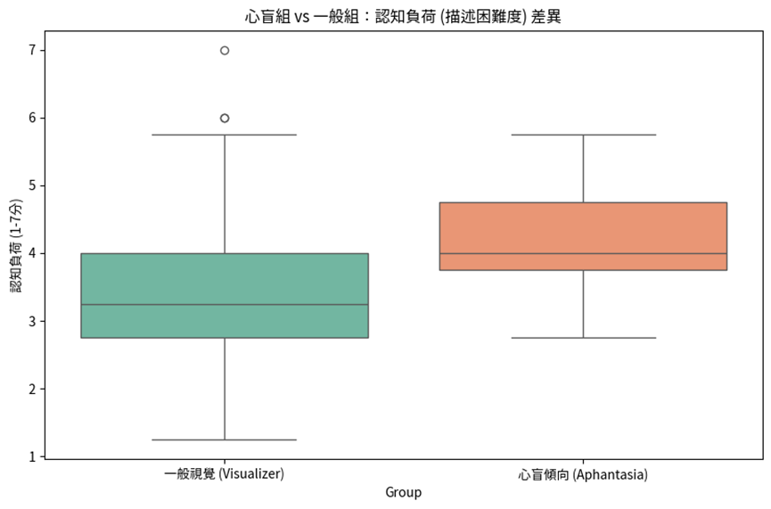
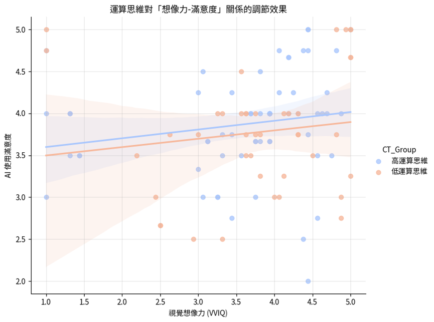

From Mind Blindness to Flow: Cognitive Compensation and Benefits of Computational Thinking in Generative AI Interaction
Author: Yu-Ting Shih
Overview
The emergence of Generative AI and "Vibe Coding" has established prompt engineering as a core competency.
Key Points
- Background: The emergence of Generative AI and "Vibe Coding" has established prompt engineering as a core competency.
- Method: The study presents a clear research design that can support further work in educational technology and AI-supported learning.
- Findings: The article highlights the value and applicability of AI-related approaches in educational and learning contexts.
- Significance: Relevant themes for follow-up discussion include: Aphantasia, Generative AI, Computational Thinking, Cognitive Load, Vibe.
Keywords
Aphantasia, Generative AI, Computational Thinking, Cognitive Load, Vibe
Summary
The emergence of Generative AI and "Vibe Coding" has established prompt engineering as a core competency. However, this poses a latent barrier for users with aphantasia, who lack voluntary mental imagery. This study conducted a quantitative analysis on 103 first -year university students by integrating the Vividness of Visual Imagery Questionnaire (VVIQ), Computational Thinking (CT), and the Technology Acceptance Model (TAM). The results indicate that: (1) individuals with aphantasic tendencies experience significantly higher cognitive load when translating abstract concepts into prompts (t=2.38,p<.05); and (2) computational thinking exerts a significant positive influence on AI user satisfaction (β=0.20,p<.01). The findings demonstrate that high computational thinking capabilities can effectively mitigate the disadvantages of low visual imagery, ther eby enhancing interaction satisfaction. The study concludes that computational thinking serves as a mechanism to transcend sensory limi…
Extracted Figures

